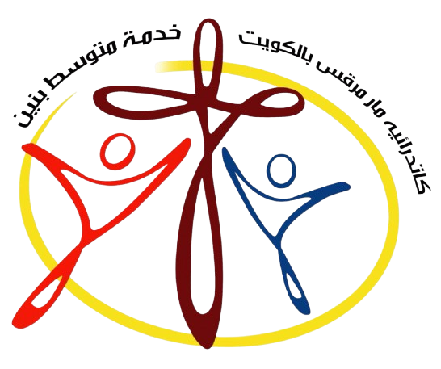

تسجيل الدخول
نظام إدارة الحضور والبصمات — خدمة متوسط بنين
البريد الإلكتروني
كلمة المرور
دخول إلى النظام
⇥ تسجيل الخروج
خدمة متوسط بنين
الرئيسية
⌕ البحث والتصفية
البحث
الفصل
كل الفصول
حالة التسجيل
الكل
مسجل
غير مسجل
من تاريخ
إلى تاريخ
⌕ بحث
↻ مسح الفلاتر
▤ تصدير Excel (CSV)
▣ طباعة / PDF
بيانات الشاب
حفظ البيانات
إلغاء